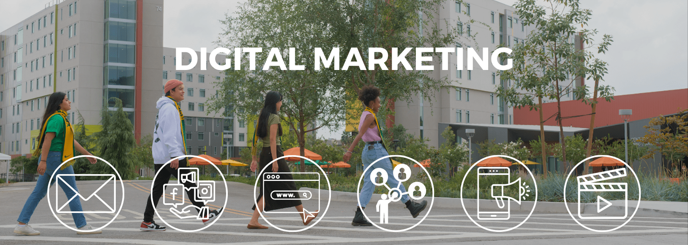

About the Website:
This is a companion website for the Master of Science in Digital Marketing Program, Singelyn Graduate School of Business at Cal Poly Pomona. The university is highly ranked for diversity, social mobility, and ROI. This site is maintained by the Director of the program to provide students with career guidance. Please direct all the questions to Dr. Jae Jung.
Objectives:
Your MSDM journey is filled with opportunities to grow, learn, and prepare for impactful careers in Digital Marketing and Marketing Analytics. This homepage serves as your starting point—linking you to the skills, tools, pathways, and experiences that will shape your professional future. Explore each section to discover how to build your capabilities and chart a meaningful career direction.
Built Around What Learners Value Most
Based on national research with professionals across the insights and data industry, we designed this program around the five qualities students value most when choosing a post-baccalaureate program:
Faculty who understand industry needs,
Practical hands-on learning,
Curriculum that adapts to a changing market,
Strong professional connections, and
Access to advanced research infrastructure.
Website Organization
Career Outlook & Guide
Career Outlook
Career Prep Guide
Digital Marketing Strategy Execution Jobs
Marketing Analytics Jobs
Career Readiness Resources
MSDM Onboarding Guide
Course Registration
Skills & Tools
Boot Camp
Skills • Tools • Courses Alignment
Capstone Project (MSDM Culminating Experience Project) - A Required Year-Long Project
Scholarships
Recruitment Scholarship
Professional Development Scholarship
Merit-Based Scholarship
LOGRAR/PPOHA Grant
LOGRAR Travel Request for Funding
Healthcare Communications & Marketing Scholarships
Student Club